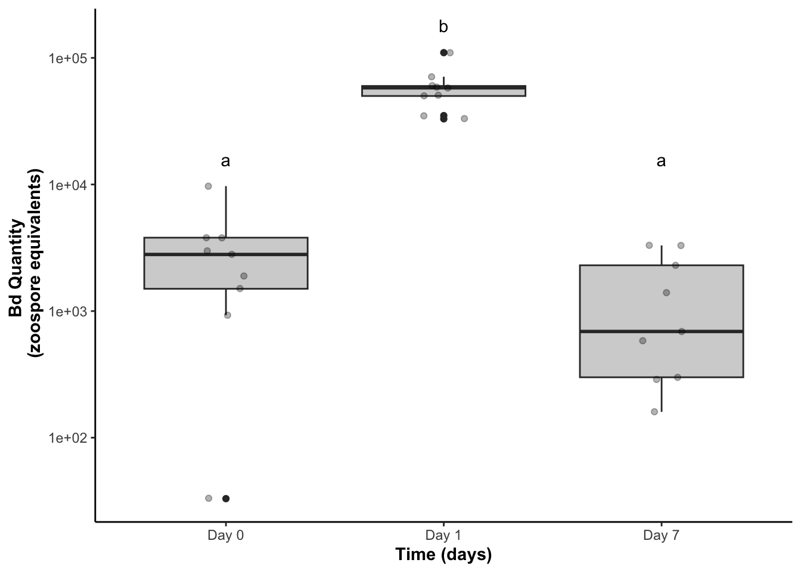
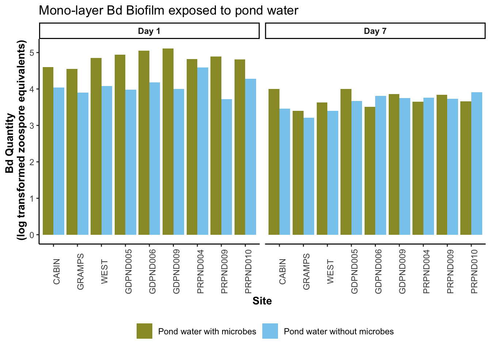
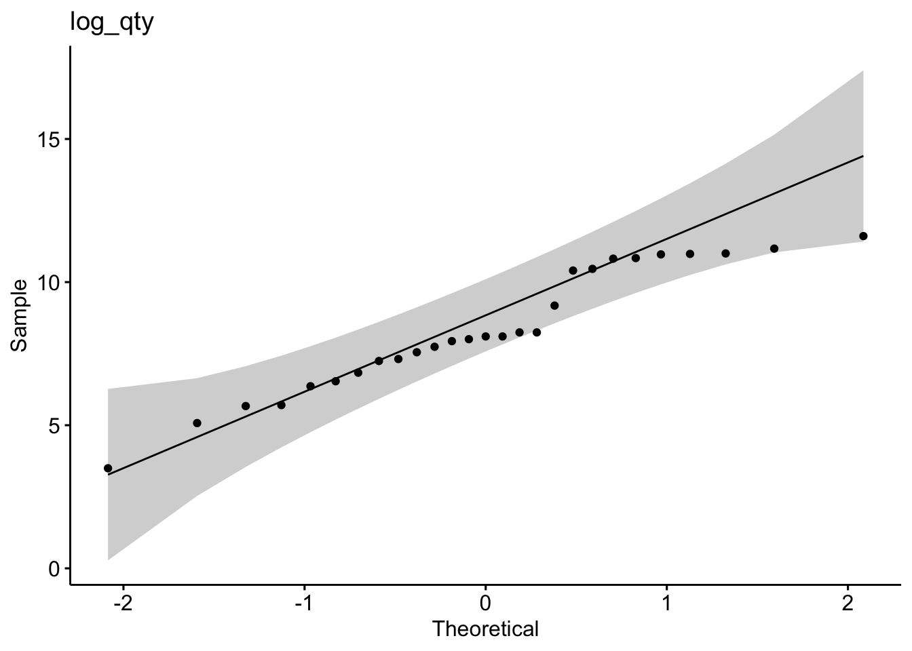

Update barplot: side by side barplot with colors, update labels to pond water with and without microbes, order by site by park to keep consistent across plots
Visualize a boxplot version too
Visualize a scatterplot too: day 1 v day 7, color by filter
Part II: “Nine sites field biofilm”
Biofilm only for analysis, but keep all data in the plot
Stats: this is a randomized block design, so stats accordingly: zsp~ day + site as a random effect
Went back and forth on color, I think the final consensus was that biofilm is dark grey and supernatant is lighter gray
Part III: Monolayer-Bd biofilm: Done
Cut the 15 sites supernatant only experiment
Use total Bd
Paired ttest on the difference
Part IV: Cross-experiment comparisons: Is a monolayer biofilm a better inhibitor compared to microbes alone? - 1: susbet out only nine sites - 2: calculate the percent Bd lost from day 1 to day 7 per site - 3: add column for monolayer biofilm or no biofilm - 4: diff ~ type - Or just plot them
Part V: Cross-experiment comparisons: Is a field biofilm a better inhibitor compared to microbes alone? - 1: susbet out only nine sites and nly 40 micron filtered from part1 - 2: calculate the percent Bd lost from day 1 to day 7 per site - 3: add column for field biofilm or no biofilm - 4: diff ~ type - Or just plot them
Part I: Effect of aquatic environmental microbes on Bd growth - 15 sites
NOTE: we need to discuss how we are handling adherent vs floating, I did one test combining and a test on each
Part I Q1
Is there a difference in the gain or loss of Bd over 7 days between the filter sizes looking at the TOTAL BD
Answer: There is a significant difference in the change in the total quantity of Bd from Day 1 to Day 7 across the filter types (t = 4.7879, df = 14, p-value = 0.000289)
This experiment took pond water from 15 East Bay sites in Spring 2022 back to the lab, filtered the pond water to keep or remove the microbes, and added Bd to the pond water. Two replicates per site per treatment, one destructively sampled day 1, and one destructively sampled day 7 for qPCR quantification of Bd in the supernatant and the biofilm itself.
PI Data visualization
Renwei barplot remake
Code
with_microbes <-"#3c3c3c"no_microbes <-"#888888"fs_pw_bd %>%pivot_wider(names_from = bd_location, values_from = bd_qty) %>%mutate(combined_bd = adherent + floating) %>%ggplot(aes(y= combined_bd, x = site, fill = filter)) +geom_col(position =position_dodge()) +#scale_y_log10() +facet_wrap(~day, labeller =labeller(day =c("Day_1"="Day 1","Day_7"="Day 7")))+scale_fill_manual(values =c(with_microbes, no_microbes), labels=c('Pond water with microbes', 'Pond water without microbes')) +theme_classic() +theme(axis.text.x =element_text(angle =90),legend.position ="bottom",strip.text =element_text(face="bold"),axis.title =element_text(face ="bold")) +xlab("Site") +ylab("Bd Quantity \n (log transformed zoospore equivalents)") +guides(fill=guide_legend(title=""))
Code
# Colors# can try fun colors suggested: these are from Paul Tol's colorblind friendly palettewith_microbes <-"#999933"no_microbes <-"#88ccee"fs_pw_bd %>%pivot_wider(names_from = bd_location, values_from = bd_qty) %>%mutate(combined_bd = adherent + floating) %>%ggplot(aes(y= combined_bd, x = site, fill = filter)) +geom_col(position =position_dodge()) +scale_y_log10() +facet_wrap(~day, labeller =labeller(day =c("Day_1"="Day 1","Day_7"="Day 7")))+scale_fill_manual(values =c(with_microbes, no_microbes), labels=c('Pond water with microbes', 'Pond water without microbes')) +theme_classic() +theme(axis.text.x =element_text(angle =90),legend.position ="bottom",strip.text =element_text(face="bold"),axis.title =element_text(face ="bold")) +xlab("Site") +ylab("Bd Quantity \n (zoospore equivalents)") +guides(fill=guide_legend(title=""))
# can try fun colors suggested: these are from Paul Tol's colorblind friendly palettewith_microbes <-"#999933"no_microbes <-"#88ccee"fs_pw_bd %>%pivot_wider(names_from = bd_location, values_from = bd_qty) %>%mutate(combined_bd = adherent + floating) %>%ggplot(aes(y=log10(combined_bd), x = filter, fill = filter)) +geom_boxplot() +geom_jitter(width =0.2, alpha =0.3) +#scale_y_log10() +facet_wrap(~day, labeller =labeller(day =c("Day_1"="Day 1","Day_7"="Day 7")))+scale_fill_manual(values =c(with_microbes, no_microbes), labels=c('Pond water with microbes', 'Pond water without microbes')) +theme_classic() +theme(legend.position ="none",strip.text =element_text(face="bold"),axis.title =element_text(face ="bold")) +scale_x_discrete (labels=c("40um_filter"="With Microbes", "0.22um_filter"="No Microbes")) +xlab("Presence of Microbes in Pond Water") +ylab("Bd Quantity \n (log zoospore equivalents)")
visualize the diff
Code
# can try fun colors suggested: these are from Paul Tol's colorblind friendly palettewith_microbes <-"#999933"no_microbes <-"#88ccee"fs_wider_combined %>%ggplot(aes(y= diff, x = filter, fill = filter)) +geom_boxplot() +#scale_y_log10() +scale_fill_manual(values =c(with_microbes, no_microbes), labels=c('Pond water with microbes', 'Pond water without microbes')) +theme_classic() +theme(legend.position ="none",strip.text =element_text(face="bold"),axis.title =element_text(face ="bold")) +scale_x_discrete (labels=c("40um_filter"="With Microbes", "0.22um_filter"="No Microbes")) +xlab("Presence of Microbes in Pond Water") +ylab("Bd Reduction \n (Quantity of zoospore equivalents lost over 7 days)")
Scatterplot
Code
with_microbes <-"#999933"no_microbes <-"#88ccee"fs_wider_combined %>%ggplot(aes(x =log10(Day_7), y =log10(Day_1), color = filter)) +geom_point() +scale_color_manual(values =c(with_microbes, no_microbes), labels=c('Pond water with microbes', 'Pond water without microbes')) +theme_classic() +theme(legend.position ="bottom",strip.text =element_text(face="bold"),axis.title =element_text(face ="bold")) +xlab("Bd Quantity Day 7 \n (log transformed zoospore equivalents)") +ylab("Bd Quantity Day 1 \n (log transformed zoospore equivalents)") +guides(fill=guide_legend(title=""))
PI Stats and assumption testing
Question:
Does the difference in Bd from day 1 to day 7 differ between the two filter types?
The samples are essentially paired by site, so a paired t-test is most appropriate
\(H0:μ_{difference in Bd}=0\)
Assumptions:
Assumes that the observations from each group represent a random sample from the population. Assumes that the difference of the two observations follow a normal distribution.
Part I Q1: Paired t-test on the difference in all of the Bd from day 1 to day 7 between the two filters
There is a significant difference in the change in the total quantity of Bd from Day 1 to Day 7 across the filter types (t = 4.7879, df = 14, p-value = 0.000289)
Code
# Assumptions testing# check normality of the differences across groupsfs_wider_combined_40um %>%ggqqplot("diff", title ="Untransformed Bd in both floating and floating diff between day 1 and 7 qqPlot") # good enough
Shapiro-Wilk normality test
data: fs_wider_combined_.22um$diff
W = 0.96225, p-value = 0.7314
Code
hist(fs_wider_combined_.22um$diff) # good enough
Stats:
Code
# Step 3: run the paired t-test on the differencet.test(fs_wider_combined_40um$diff, fs_wider_combined_.22um$diff, paired =TRUE)
Paired t-test
data: fs_wider_combined_40um$diff and fs_wider_combined_.22um$diff
t = 4.7879, df = 14, p-value = 0.000289
alternative hypothesis: true mean difference is not equal to 0
95 percent confidence interval:
30282.21 79427.13
sample estimates:
mean difference
54854.67
Part II: Effect of the aquatic environmental biofilm on Bd growth - “9 sites”
Part II Q2: Is there a difference in Bd quantity in the biofilm between day 0, 1, 7?
PII Data visualization
Renwei barplot
Code
ns_biofilm_bd %>%ggplot(aes(y= bd_qty, x = site, fill=bd_location)) +geom_col() +facet_grid(.~day)+theme_classic()+scale_fill_manual(values =c("lightgrey", "gray45" )) +theme(axis.text.x =element_text(angle =90),legend.position ="bottom") +scale_y_log10() +xlab("Site") +ylab("Total Bd Quantity Per Well \n (zoospore equivalents)")
Boxplot
Code
biofilm_only %>%ggplot(aes(y=log10(bd_qty), x = day)) +geom_boxplot(fill ="gray45") +theme_classic() +theme(legend.position ="none",strip.text =element_text(face="bold"),axis.title =element_text(face ="bold")) +scale_x_discrete (labels=c("40um_filter"="With Microbes", "0.22um_filter"="No Microbes")) +xlab("Time (days)") +ylab("Bd Quantity \n (log transformed zoospore equivalents)") +ggtitle("Amount of Bd incorporated into field-collected biofilm over time")
PII Assumptions testing and Stats
Mix-effects model
Outcome variable: amount of Bd Fixed effect: day Random effect: site
lme time using nlme
Code
biofilm_only <- biofilm_only %>%mutate(log_qty =log(bd_qty))lme_mod <-lme(log_qty ~ day, random =~1|factor(site), data = biofilm_only)lme_mod # "print" the output
Linear mixed-effects model fit by REML
Data: biofilm_only
Log-restricted-likelihood: -40.8039
Fixed: log_qty ~ day
(Intercept) dayDay_1 dayDay_7
7.4226286 3.4952588 -0.6963171
Random effects:
Formula: ~1 | factor(site)
(Intercept) Residual
StdDev: 4.675947e-05 1.154766
Number of Observations: 27
Number of Groups: 9
Code
summary(lme_mod) # summary of the output
Linear mixed-effects model fit by REML
Data: biofilm_only
AIC BIC logLik
91.6078 97.49807 -40.8039
Random effects:
Formula: ~1 | factor(site)
(Intercept) Residual
StdDev: 4.675947e-05 1.154766
Fixed effects: log_qty ~ day
Value Std.Error DF t-value p-value
(Intercept) 7.422629 0.3849219 16 19.283466 0.0000
dayDay_1 3.495259 0.5443618 16 6.420838 0.0000
dayDay_7 -0.696317 0.5443618 16 -1.279144 0.2191
Correlation:
(Intr) dyDy_1
dayDay_1 -0.707
dayDay_7 -0.707 0.500
Standardized Within-Group Residuals:
Min Q1 Med Q3 Max
-3.39992852 -0.35421365 0.05837138 0.55166474 1.52173935
Number of Observations: 27
Number of Groups: 9
Code
# ignore day 0?day1_7 <- biofilm_only %>%filter(day!="Day_0")lme_mod2 <-lme(log_qty ~ day, random =~1|factor(site), data = biofilm_only)lme_mod2 # "print" the output
Linear mixed-effects model fit by REML
Data: biofilm_only
Log-restricted-likelihood: -40.8039
Fixed: log_qty ~ day
(Intercept) dayDay_1 dayDay_7
7.4226286 3.4952588 -0.6963171
Random effects:
Formula: ~1 | factor(site)
(Intercept) Residual
StdDev: 4.675947e-05 1.154766
Number of Observations: 27
Number of Groups: 9
Code
summary(lme_mod2) # summary of the output
Linear mixed-effects model fit by REML
Data: biofilm_only
AIC BIC logLik
91.6078 97.49807 -40.8039
Random effects:
Formula: ~1 | factor(site)
(Intercept) Residual
StdDev: 4.675947e-05 1.154766
Fixed effects: log_qty ~ day
Value Std.Error DF t-value p-value
(Intercept) 7.422629 0.3849219 16 19.283466 0.0000
dayDay_1 3.495259 0.5443618 16 6.420838 0.0000
dayDay_7 -0.696317 0.5443618 16 -1.279144 0.2191
Correlation:
(Intr) dyDy_1
dayDay_1 -0.707
dayDay_7 -0.707 0.500
Standardized Within-Group Residuals:
Min Q1 Med Q3 Max
-3.39992852 -0.35421365 0.05837138 0.55166474 1.52173935
Number of Observations: 27
Number of Groups: 9
using Generalized linear mixed model
Code
library(lme4)
Loading required package: Matrix
Attaching package: 'Matrix'
The following objects are masked from 'package:tidyr':
expand, pack, unpack
Attaching package: 'lme4'
The following object is masked from 'package:nlme':
lmList
Code
mod<-glmer(log_qty ~ day + (1|site), data=biofilm_only)
Warning in glmer(log_qty ~ day + (1 | site), data = biofilm_only): calling
glmer() with family=gaussian (identity link) as a shortcut to lmer() is
deprecated; please call lmer() directly
boundary (singular) fit: see help('isSingular')
Code
summary(mod) # no p output?
Linear mixed model fit by REML ['lmerMod']
Formula: log_qty ~ day + (1 | site)
Data: biofilm_only
REML criterion at convergence: 81.6
Scaled residuals:
Min 1Q Median 3Q Max
-3.3999 -0.3542 0.0584 0.5517 1.5217
Random effects:
Groups Name Variance Std.Dev.
site (Intercept) 0.000 0.000
Residual 1.333 1.155
Number of obs: 27, groups: site, 9
Fixed effects:
Estimate Std. Error t value
(Intercept) 7.4226 0.3849 19.283
dayDay_1 3.4953 0.5444 6.421
dayDay_7 -0.6963 0.5444 -1.279
Correlation of Fixed Effects:
(Intr) dyDy_1
dayDay_1 -0.707
dayDay_7 -0.707 0.500
optimizer (nloptwrap) convergence code: 0 (OK)
boundary (singular) fit: see help('isSingular')
Part III: Effect of microbes in pond water on the Bd-release from mono-strain Bd biofilm - “9 sites” and included biofilm
Scientific Q: Is mono-strain Bd biofilm resistant to microbes in pond water
Statistical question:
Is there a difference in the gain or loss of Bd in supernatant over 7 days between the filter sizes?
There is a significant difference in the change in the total quantity of Bd from Day 1 to Day 7 across the filter types (t = -6.45, df = 7, p-value = 0.0003)
Renwei barplot
Code
with_microbes <-"#3c3c3c"no_microbes <-"#888888"ns_ml_pw_bd %>%pivot_wider(names_from = bd_location, values_from = bd_qty) %>%mutate(combined_bd = adherent + supernatant) %>%ggplot(aes(y=log10(combined_bd), x = site, fill = filter)) +geom_col(position =position_dodge()) +facet_wrap(~day, labeller =labeller(day =c("Day_1"="Day 1","Day_7"="Day 7")))+scale_fill_manual(values =c(with_microbes, no_microbes), labels=c('Pond water with microbes', 'Pond water without microbes')) +theme_classic() +theme(axis.text.x =element_text(angle =90),legend.position ="bottom",strip.text =element_text(face="bold"),axis.title =element_text(face ="bold")) +xlab("Site") +ylab("Bd Quantity \n (log transformed zoospore equivalents)") +guides(fill=guide_legend(title="")) +ggtitle("Mono-layer Bd Biofilm exposed to pond water")

Code
# Colors# can try fun colors suggested: these are from Paul Tol's colorblind friendly palettewith_microbes <-"#999933"no_microbes <-"#88ccee"ns_ml_pw_bd %>%pivot_wider(names_from = bd_location, values_from = bd_qty) %>%mutate(combined_bd = adherent + supernatant) %>%ggplot(aes(y=log10(combined_bd), x = site, fill = filter)) +geom_col(position =position_dodge()) +facet_wrap(~day, labeller =labeller(day =c("Day_1"="Day 1","Day_7"="Day 7")))+scale_fill_manual(values =c(with_microbes, no_microbes), labels=c('Pond water with microbes', 'Pond water without microbes')) +theme_classic() +theme(axis.text.x =element_text(angle =90),legend.position ="bottom",strip.text =element_text(face="bold"),axis.title =element_text(face ="bold")) +xlab("Site") +ylab("Bd Quantity \n (log transformed zoospore equivalents)") +guides(fill=guide_legend(title="")) +ggtitle("Mono-layer Bd Biofilm exposed to pond water")

Boxplot
Code
with_microbes <-"#3c3c3c"no_microbes <-"#888888"ns_ml_pw_bd %>%pivot_wider(names_from = bd_location, values_from = bd_qty) %>%mutate(combined_bd = adherent + supernatant) %>%ggplot(aes(y=log10(combined_bd), x = filter, fill = filter)) +geom_boxplot() +facet_wrap(~day, labeller =labeller(day =c("Day_1"="Day 1","Day_7"="Day 7")))+scale_fill_manual(values =c(with_microbes, no_microbes), labels=c('Pond water with microbes', 'Pond water without microbes')) +theme_classic() +theme(legend.position ="none",strip.text =element_text(face="bold"),axis.title =element_text(face ="bold")) +scale_x_discrete (labels=c("40um_filter"="With Microbes", "0.22um_filter"="No Microbes")) +xlab("Presence of Microbes in Pond Water") +ylab("Bd Quantity \n (log transformed zoospore equivalents)") +ggtitle("Mono-layer Bd Biofilm exposed to pond water")
Code
# can try fun colors suggested: these are from Paul Tol's colorblind friendly palettewith_microbes <-"#999933"no_microbes <-"#88ccee"ns_ml_pw_bd %>%pivot_wider(names_from = bd_location, values_from = bd_qty) %>%mutate(combined_bd = adherent + supernatant) %>%ggplot(aes(y=log10(combined_bd), x = filter, fill = filter)) +geom_boxplot() +facet_wrap(~day, labeller =labeller(day =c("Day_1"="Day 1","Day_7"="Day 7")))+scale_fill_manual(values =c(with_microbes, no_microbes), labels=c('Pond water with microbes', 'Pond water without microbes')) +theme_classic() +theme(legend.position ="none",strip.text =element_text(face="bold"),axis.title =element_text(face ="bold")) +scale_x_discrete (labels=c("40um_filter"="With Microbes", "0.22um_filter"="No Microbes")) +xlab("Presence of Microbes in Pond Water") +ylab("Bd Quantity \n (log transformed zoospore equivalents)") +ggtitle("Mono-layer Bd Biofilm exposed to pond water")

Scatterplot
Code
with_microbes <-"#999933"no_microbes <-"#88ccee"ns_ml_wider_combined %>%ggplot(aes(x =log10(Day_7), y =log10(Day_1), color = filter)) +geom_point() +scale_color_manual(values =c(with_microbes, no_microbes), labels=c('Pond water with microbes', 'Pond water without microbes')) +theme_classic() +theme(legend.position ="bottom",strip.text =element_text(face="bold"),axis.title =element_text(face ="bold")) +xlab("Bd Quantity Day 7 \n (log transformed zoospore equivalents)") +ylab("Bd Quantity Day 1 \n (log transformed zoospore equivalents)") +guides(fill=guide_legend(title=""))
PIII Stats and assumption testing
Question:
Does the difference in Bd from day 1 to day 7 differ between the two filter types?
The samples are essentially paired by site, so a paired t-test is most appropriate
\(H0:μ_{difference in Bd}=0\)
Assumptions:
Assumes that the observations from each group represent a random sample from the population. Assumes that the difference of the two observations follow a normal distribution.
Code
# Assumptions testing# check normality of the differences across groupsns_ml_wider_combined_40um %>%ggqqplot("diff", title ="40 um") # not great
Code
shapiro.test(ns_ml_wider_combined_40um$diff) # NOT normal
Shapiro-Wilk normality test
data: ns_ml_wider_combined_40um$diff
W = 0.73146, p-value = 0.003302
Code
hist(ns_ml_wider_combined_40um$diff) # nope
Code
# we gotta transform, but we have negative: west GAINED Bdns_ml_wider_combined_40um <- ns_ml_wider_combined_40um %>%mutate(log_diff =log(diff))
Warning: There was 1 warning in `mutate()`.
ℹ In argument: `log_diff = log(diff)`.
Caused by warning in `log()`:
! NaNs produced
Code
ns_ml_wider_combined_40um %>%ggqqplot("log_diff", title ="40 um") # good enough
Shapiro-Wilk normality test
data: ns_ml_wider_combined_40um$log_diff
W = 0.87459, p-value = 0.167
Code
hist(ns_ml_wider_combined_40um$log_diff) # sure
Code
# 0.22 micron# check normality of the differences across groupsns_ml_wider_combined_.22um %>%ggqqplot("diff", title =".22 um") # not great
Code
shapiro.test(ns_ml_wider_combined_.22um$diff) # shapiro says its fine
Shapiro-Wilk normality test
data: ns_ml_wider_combined_.22um$diff
W = 0.93097, p-value = 0.4906
Code
hist(ns_ml_wider_combined_.22um$diff) # meh
Code
# we gotta transform, but we have negative: west GAINED Bdns_ml_wider_combined_.22um <- ns_ml_wider_combined_.22um %>%mutate(log_diff =log(diff))ns_ml_wider_combined_.22um %>%ggqqplot("log_diff", title =".22 um") # better?
Shapiro-Wilk normality test
data: ns_ml_wider_combined_.22um$log_diff
W = 0.92397, p-value = 0.4262
Code
hist(ns_ml_wider_combined_.22um$log_diff) # sure
Stats:
Code
# Step 3: run the paired t-test on the differencet.test(ns_ml_wider_combined_40um$log_diff, ns_ml_wider_combined_.22um$log_diff, paired =TRUE)
Paired t-test
data: ns_ml_wider_combined_40um$log_diff and ns_ml_wider_combined_.22um$log_diff
t = -6.4535, df = 7, p-value = 0.0003491
alternative hypothesis: true mean difference is not equal to 0
95 percent confidence interval:
-2.701740 -1.252776
sample estimates:
mean difference
-1.977258
Part IV Monolayer vs Water
Part IV: Part 1 vs part 3 - 1: susbet out only nine sites - 2: calculate the percent Bd lost from day 1 to day 7 per site - 3: add column for field biofilm or no biofilm - 4: diff ~ type - Or just plot them
all_parts %>%ggplot(aes(y= percent_loss, x = treatment)) +geom_boxplot() +geom_jitter(alpha =0.5, width =0.1) +scale_fill_manual(values =c(with_microbes, no_microbes), labels=c('Pond water with microbes', 'Pond water without microbes')) +theme_classic() +theme(legend.position ="none",strip.text =element_text(face="bold"),axis.title =element_text(face ="bold")) +scale_x_discrete (labels=c("40um_filter"="With Microbes", "0.22um_filter"="No Microbes")) +xlab("Treatment") +ylab("Percent Reduction of Bd over 7 Days") +ggtitle("Which treatments are we comparing?")
What inhibits Bd the most? Microbes vs monolayer vs field biofilm
throw it all in a mixed model?
Code
lme_mod <-lme(percent_loss ~ treatment, random =~1|factor(site), data = all_parts)lme_mod # "print" the output
Linear mixed-effects model fit by REML
Data: all_parts
Log-restricted-likelihood: -175.0209
Fixed: percent_loss ~ treatment
(Intercept) treatmentMonolayer 0.22um treatmentMonolayer 40um
97.32730743 -38.95028732 -6.33290613
treatmentPW 0.22um treatmentPW 40um
-59.09308461 -0.08636287
Random effects:
Formula: ~1 | factor(site)
(Intercept) Residual
StdDev: 0.001021913 16.76439
Number of Observations: 45
Number of Groups: 9
Code
summary(lme_mod) # summary of the output
Linear mixed-effects model fit by REML
Data: all_parts
AIC BIC logLik
364.0417 375.8639 -175.0209
Random effects:
Formula: ~1 | factor(site)
(Intercept) Residual
StdDev: 0.001021913 16.76439
Fixed effects: percent_loss ~ treatment
Value Std.Error DF t-value p-value
(Intercept) 97.32731 5.588128 32 17.416799 0.0000
treatmentMonolayer 0.22um -38.95029 7.902807 32 -4.928665 0.0000
treatmentMonolayer 40um -6.33291 7.902807 32 -0.801349 0.4288
treatmentPW 0.22um -59.09308 7.902807 32 -7.477480 0.0000
treatmentPW 40um -0.08636 7.902807 32 -0.010928 0.9913
Correlation:
(Intr) tM0.22 trtM40 tPW0.2
treatmentMonolayer 0.22um -0.707
treatmentMonolayer 40um -0.707 0.500
treatmentPW 0.22um -0.707 0.500 0.500
treatmentPW 40um -0.707 0.500 0.500 0.500
Standardized Within-Group Residuals:
Min Q1 Med Q3 Max
-3.61756487 -0.14708731 0.06632053 0.14843052 1.59933979
Number of Observations: 45
Number of Groups: 9
Look at just PW microbes vs monolayer with microbes
Code
sub1 <- all_parts %>%filter(treatment =="PW 40um"| treatment =="Monolayer 40um")lme_mod <-lme(percent_loss ~ treatment, random =~1|factor(site), data = sub1)lme_mod # "print" the output
Linear mixed-effects model fit by REML
Data: sub1
Log-restricted-likelihood: -49.58745
Fixed: percent_loss ~ treatment
(Intercept) treatmentPW 40um
90.994401 6.246543
Random effects:
Formula: ~1 | factor(site)
(Intercept) Residual
StdDev: 2.423494 4.09734
Number of Observations: 18
Number of Groups: 9
Code
summary(lme_mod) # summary of the output, there's a diff
Linear mixed-effects model fit by REML
Data: sub1
AIC BIC logLik
107.1749 110.2653 -49.58745
Random effects:
Formula: ~1 | factor(site)
(Intercept) Residual
StdDev: 2.423494 4.09734
Fixed effects: percent_loss ~ treatment
Value Std.Error DF t-value p-value
(Intercept) 90.99440 1.586804 8 57.34446 0.000
treatmentPW 40um 6.24654 1.931505 8 3.23403 0.012
Correlation:
(Intr)
treatmentPW 40um -0.609
Standardized Within-Group Residuals:
Min Q1 Med Q3 Max
-2.9702005 -0.2299015 0.2273115 0.4242521 1.0628579
Number of Observations: 18
Number of Groups: 9
Paired t-test
data: treat1$percent_loss and treat2$percent_loss
t = 3.1461, df = 8, p-value = 0.01368
alternative hypothesis: true mean difference is not equal to 0
95 percent confidence interval:
1.667956 10.825130
sample estimates:
mean difference
6.246543
Look at just PW microbes vs field bd without microbes
Code
sub1 <- all_parts %>%filter(treatment =="PW 40um"| treatment =="Field bf 0.22")lme_mod <-lme(percent_loss ~ treatment, random =~1|factor(site), data = sub1)lme_mod # "print" the output
Linear mixed-effects model fit by REML
Data: sub1
Log-restricted-likelihood: -38.82023
Fixed: percent_loss ~ treatment
(Intercept) treatmentPW 40um
97.32730743 -0.08636287
Random effects:
Formula: ~1 | factor(site)
(Intercept) Residual
StdDev: 9.440487e-05 2.386909
Number of Observations: 18
Number of Groups: 9
Code
summary(lme_mod) # summary of the output, no diff
Linear mixed-effects model fit by REML
Data: sub1
AIC BIC logLik
85.64046 88.73081 -38.82023
Random effects:
Formula: ~1 | factor(site)
(Intercept) Residual
StdDev: 9.440487e-05 2.386909
Fixed effects: percent_loss ~ treatment
Value Std.Error DF t-value p-value
(Intercept) 97.32731 0.7956364 8 122.32636 0.0000
treatmentPW 40um -0.08636 1.1251998 8 -0.07675 0.9407
Correlation:
(Intr)
treatmentPW 40um -0.707
Standardized Within-Group Residuals:
Min Q1 Med Q3 Max
-1.8242564 -0.8547397 0.4304833 0.8243500 1.0424972
Number of Observations: 18
Number of Groups: 9
Paired t-test
data: treat1$percent_loss and treat2$percent_loss
t = -0.073063, df = 8, p-value = 0.9435
alternative hypothesis: true mean difference is not equal to 0
95 percent confidence interval:
-2.812140 2.639414
sample estimates:
mean difference
-0.08636287
Part V:
Overarching question: Does the amount of Bd in the biofilm or supernatant differ across days?